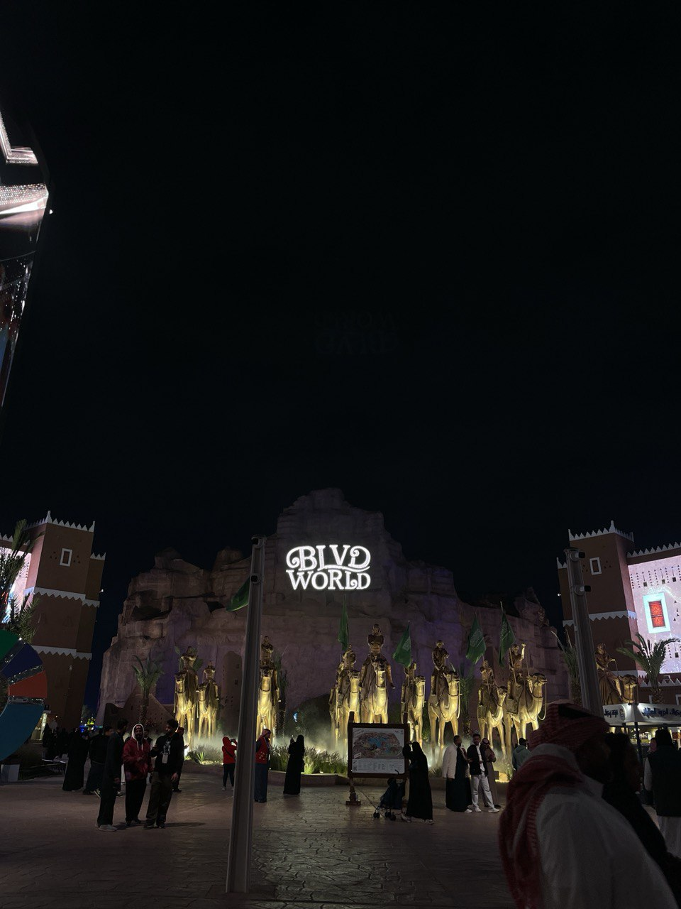

is an amusement park situated at the Prince Turki al-Awwal Road in the Hittin neighborhood of Riyadh, Saudi Arabia, located adjacent to Boulevard City. Opened in November 2022, it operates primarily during the annual Riyadh Season entertainment festival and features replicas of iconic landmarks from several countries. Besides being a high-end miniature park, it also features the world’s largest man-made lagoon, with an area of approximately 12-hectares.[1][2][3] So far, Riyadh Season 2024 at Boulevard World attracted 6 million visitors since its opening on October 12th.[4]
